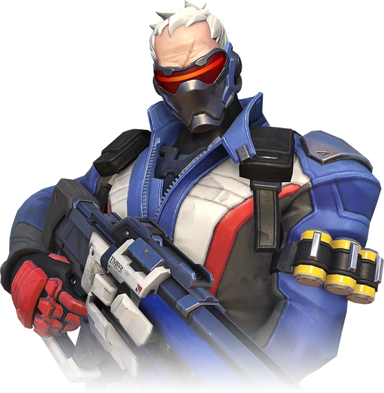
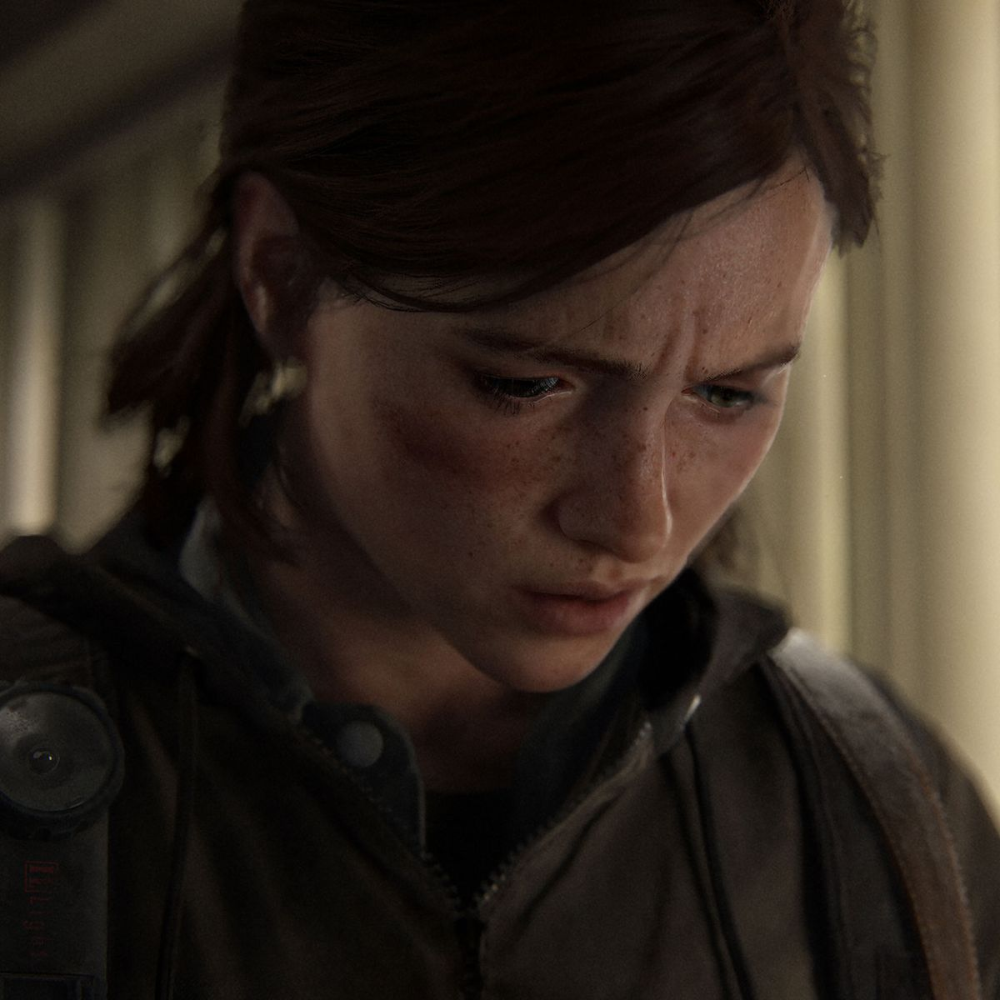

Soldier 76 and Ellie: Two Strong Gay Characters in Gaming
Representations of homosexuality in games are a very mixed bag. While it’s not uncommon to see tokenistic representations in games, the real problem is that a lot of poor representations perpetuate stereotypes.
In recent years, however, we’ve seen some good change in that area. One of the most iconic gay man-presenting characters in games is none other than Soldier 76 from Blizzard Entertainment’s Overwatch. As a competitive hero shooter, the game features an ethnically diverse cast, and even went as far as to hire voice actors from around the world to create authentic performances.
When Soldier 76 was revealed to the world as a steely, hard-laced soldier, players were impressed by his pure “cool factor”. I mean look at him:
Everything from his iconic experimental rifle to the red and blue leather jacket donning his iconic numbers, Soldier 76 is a fan favorite for good reason. When Overwatch first launched in 2015, we didn’t know a lot about him; for all intents and purposes, he was an enigma.
Alongside the game, Blizzard released comics and short films on each of the game’s characters. In one such comic, it was confirmed that Soldier 76 was gay.
Fan reactions to this were mixed, which really speaks to how much homophobia exists online. I find Soldier 76 to be an excellent piece of LGBTQIA+ representation, especially considering Soldier 76 is an older gentleman.
Another instance of gay representation in games recently was with Ellie from The Last of Us: Part II. Ellie was a companion character in the first game, being able to play a lesbian main character in a large budget game was rare.
Considering The Last of Us: Part II is an absolutely brutal game, it’s surprising to see a AAA studio to put a gay character at the forefront. Often we find that LGBTQIA+ representation is delegated to less violent video games, but that ultimately hinders the stories games are able to tell.
Gay representation has seen a lot of positive change in the games industry recently, but we have to keep that momentum. In more character driven games, it’s much more common to see gay characters than it was 10 or even 5 years ago.